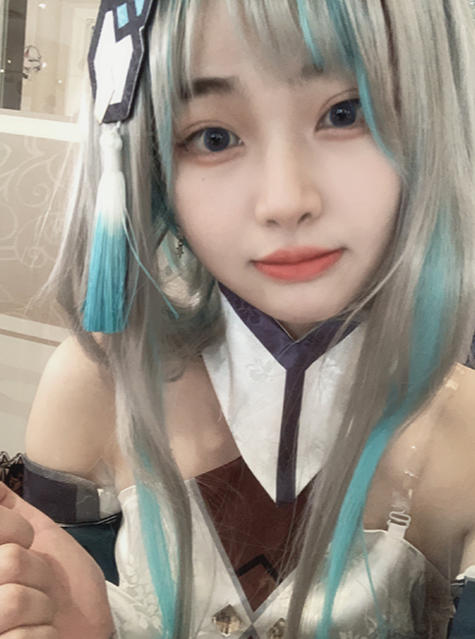
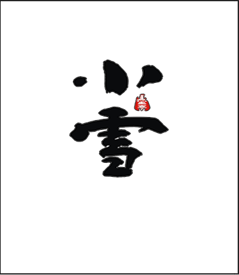
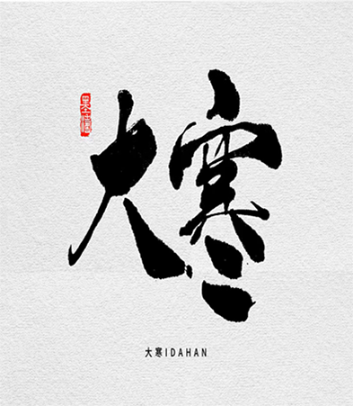
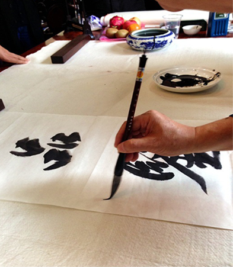
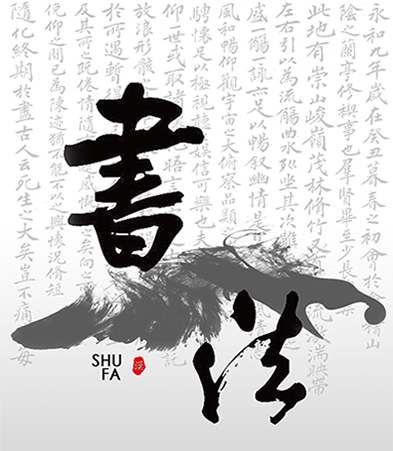
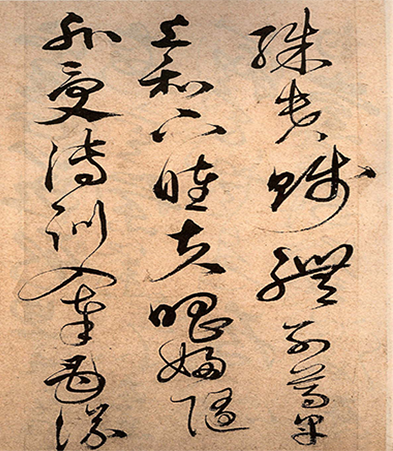

关于门主

宝宝是一个热爱二次元世界的可爱女生。她有一头乌黑的头发，常常扎着双马尾，眼睛里闪烁着对动漫和漫画的热情。宝宝热衷于收集和分享自己的二次元作品收藏，她对于各种角色和情节都了如指掌。在她的房间里，布满了海报、手办和漫画书，每一件物品都是她独特的宝藏。她常常参加动漫展览和Cosplay活动，每一次扮演都令人印象深刻。宝宝的二次元爱好让她有了许多志同道合的朋友，她用自己的热情和创造力点亮了这个神奇的次元世界。
宝门介绍
宝门组织，是一个独一无二的社团，汇聚了二次元世界的狂热爱好者。我们追寻、创造和分享二次元文化的精髓。无论是动漫、漫画、游戏还是Cosplay，我们对二次元世界的热情无比深厚。宝门组织的成员不仅是观众，更是创作者和艺术家。我们组织各种二次元活动、聚会和展览，推动着这个独特文化的传承和发展。在宝门里，你会找到志同道合的朋友，一同探索二次元世界的无限可能性，创造属于我们的精彩故事。
展示
- 
- 
- 
- 
- 